Una guía para quienes administran y publican contenido en el sitio web de la Liga.
VERSIÓN 1.5 / 19 DE OCTUBRE DE 2026 WordPress · LABM
LABM / MANUAL DE USUARIO
02
Encuentra cada tarea
Busca la tarea y pulsa su nombre. Las páginas con letra continúan la misma sección. El manual escrito complementario amplía los pasos y las soluciones a problemas frecuentes.
Accede al administrador para gestionar contenido. Los menús disponibles dependen de los permisos de tu cuenta.
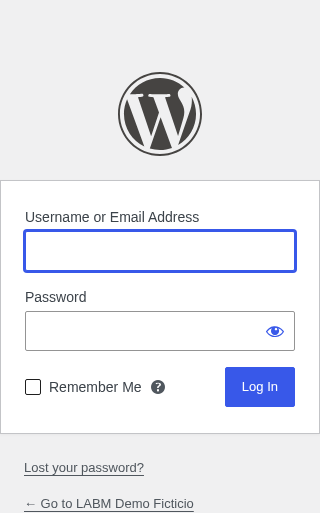
1Abre https://balonmanoantioquia.com/wp-admin/.
2Escribe usuario y contraseña. Pulsa Log In / Acceder.
3Busca la sección en el menú lateral del Escritorio. Para publicar noticias usa Actualidad; para PDF, Documentos.
Las credenciales se entregan por el canal acordado. No se incluyen en este manual. Algunos controles de las capturas están en inglés.
LABM / MANUAL DE USUARIO
04
Una publicación, cuatro momentos
Crear → guardar borrador → revisar → publicar. Usa el botón de alta de la colección exacta: Actualidad, Selecciones, Documentos, Integrantes u otra. Actualizar una publicación existente conserva su registro.
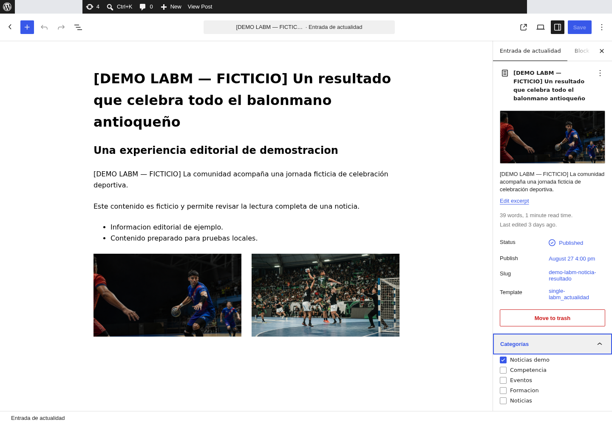
1
1Título y cuerpo del artículo.
2
2Selecciona la categoría que corresponda.
1En la sección correcta pulsa Añadir… / Add Post. Completa título y contenido con bloques.
2Revisa el panel derecho: imagen destacada, extracto y clasificación. Selecciona una clasificación existente y guarda como borrador mientras revisas.
3Usa Preview / Vista previa y comprueba imágenes, enlaces y lectura en móvil.
4Pulsa Publish / Publicar y confirma. Guardar / Borrador conserva sin publicar; Actualizar guarda cambios ya existentes.
Guardar no siempre publica. Comprueba Status / Estado y abre el sitio público para verificar el resultado.
LABM / MANUAL DE USUARIO
04A
Activa los campos personalizados
Algunas secciones guardan datos adicionales con campos personalizados. La activación se realiza desde las preferencias del editor y queda guardada por usuario.
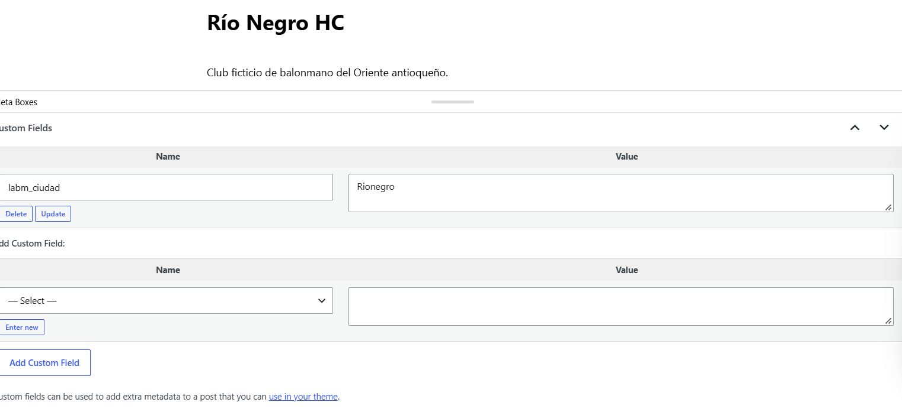
1Abre una publicación nueva o existente en el editor de bloques.
2Abre el menú de opciones en la esquina superior derecha y entra en Preferences / Preferencias.
3Entra en Panels / Paneles y activa Custom fields / Campos personalizados.
4Si WordPress solicita recargar, confirma. En el panel usa Name para la clave, Value para el dato y Add Custom Field. Para un campo existente, edita el valor y pulsa Update.
La imagen muestra el panel nativo después de activarlo. Esta página explica cómo abrirlo; consulta cada sección para conocer únicamente el dato adicional que allí se utiliza. No traduzcas ni cambies una clave: escríbela exactamente y modifica solo su valor. Documentos, Aliados Oficiales y Footer LABM usan controles propios del panel, no este mecanismo.
LABM / MANUAL DE USUARIO
05
Publica en Actualidad
Noticias, eventos y contenido informativo se crean en Actualidad, no en las entradas institucionales.
1
1Título y cuerpo del artículo.
2
2Selecciona la categoría que corresponda.
1Entra en Actualidad → Añadir Entrada de actualidad. Escribe título y cuerpo.
2Abre Categorías y elige una categoría existente que corresponda al contenido; luego añade imagen destacada y extracto.
3Para varias fotografías, inserta el bloque Galería. Después de publicar, verifica dos vistas:
Listado: abre la página general de Actualidad (/actualidad/), donde aparecen varias noticias.
Detalle: haz clic en el título de la noticia para abrir su página individual (/actualidad/nombre-del-articulo/).
Confirma que el artículo aparece en el listado y que el detalle muestra correctamente título, imágenes insertadas en el contenido, fecha y enlaces para compartir.
Títulos y resumen: edita el título en Título de la entrada de Actualidad. Las tarjetas usan el Extracto; si está vacío, WordPress lo genera desde el contenido. “Actualidad” y sus encabezados son fijos.
Evento Destacado de Inicio: se genera automáticamente. Consulta en la página 05A cómo se elige y cómo asignar su fecha. Para el campo labm_fecha_evento, activa Campos personalizados según la página 04A.
Imágenes: usa una imagen destacada horizontal de 1600 × 900 px (16:9); se utiliza como vista previa en el listado y en Inicio. Para mostrar fotografías dentro del artículo, insértalas en el cuerpo o en un bloque Galería; prepara cada foto en 1200 × 900 px (4:3). Las tarjetas pueden recortar la imagen. Deja el motivo principal cerca del centro y no incrustes texto pequeño. Recom.: JPG/WebP, hasta 500 KB por foto. Esta sección no tiene tope propio; aplica el límite global de Medios.
LABM / MANUAL DE USUARIO
05A
Cómo se elige el Evento Destacado
El bloque de Inicio se alimenta automáticamente de publicaciones publicadas de Actualidad (labm_actualidad) que tengan el campo labm_fecha_evento.
1Abre una publicación de Actualidad nueva o existente. En el editor pulsa ⋮ → Preferences / Preferencias → Panels / Paneles y activa Custom fields / Campos personalizados. Confirma la recarga si WordPress la solicita.
2En el panel de campos, crea o actualiza el campo labm_fecha_evento. Escribe la fecha del evento en formato AAAA-MM-DD, por ejemplo 2026-10-12, y pulsa Add Custom Field / Añadir campo personalizado o Update / Actualizar.
3Guarda o actualiza la publicación. La preferencia de visibilidad de Campos personalizados queda guardada por usuario; consulta los pasos ilustrados en la página 04A.
Regla de selección: entre las publicaciones publicadas que tengan una fecha válida, se elige la fecha de evento más antigua (orden ascendente). Si varias comparten la fecha, se elige el ID menor. No hay selector manual y no se exige una categoría específica.
Qué aparece: imagen destacada si existe, fecha del evento, título, extracto o resumen del contenido y enlace Ver evento. Si ninguna publicación cumple los requisitos, el bloque no se muestra.
Fechas distintas:labm_fecha_evento es la fecha del evento; no cambia la fecha de publicación. En el listado y el detalle de Actualidad, si el campo contiene una fecha válida, se muestra esa fecha; si falta o es inválida, se muestra la fecha de publicación.
LABM / MANUAL DE USUARIO
06
Selecciones: Piso y Playa
La modalidad de la publicación determina dónde aparece y qué opción del menú queda seleccionada.
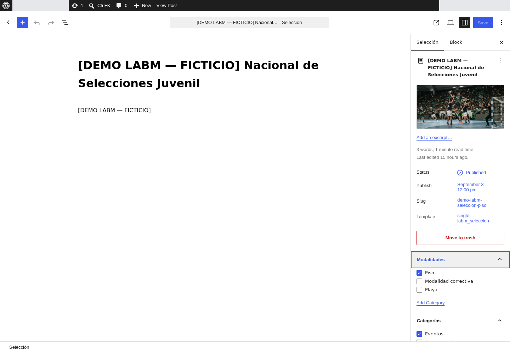
1
1Título y relato de la participación.
2
2Asigna la modalidad Piso o Playa.
1Selecciones → Añadir Selección. Completa título, relato de la participación e imagen destacada.
2En Modalidades selecciona Piso o Playa. Completa Categorías y el extracto.
3Publica y revisa el listado de esa modalidad. Abre la interna: Selecciones y la modalidad deben seguir activos.
Título y descripción del listado: “Piso” o “Playa” se cambia editando la modalidad correspondiente en Selecciones → Modalidades. Allí, el campo Description / Descripción controla el texto bajo la cabecera. Si queda vacío, aparece “Conoce las selecciones publicadas de la Liga Antioqueña de Balonmano.” El prefijo “SELECCIÓN ANTIOQUIA ·” es fijo y requiere apoyo del administrador para cambiarlo. El filtro Piso/Playa está en el submenú de navegación Selecciones, no en la cabecera. “Balonmano de Piso/Playa” y el conteo de participaciones se generan automáticamente.
Cada publicación: cambia su título desde el campo Título de WordPress en la entrada de Selecciones. labm_modalidad_detalle es un dato opcional para la tarjeta y el panel de participación; si está vacío, esa información se omite. La clasificación Modalidades define el listado, no Categorías.
Imágenes: usa la imagen destacada como vista previa en el listado, recomendada en 1600 × 900 px (16:9), JPG/WebP, hasta 500 KB. Para mostrar fotografías en la participación, insértalas en el cuerpo del artículo. La miniatura del listado se recorta para llenar un marco horizontal. Centra la acción principal. No hay un límite de carga exclusivo para Selecciones: aplica el límite global de Medios.
LABM / MANUAL DE USUARIO
07
Documentos: asocia el PDF
Este panel es real y específico de LABM. Se encuentra en la barra derecha del editor de Documentos.
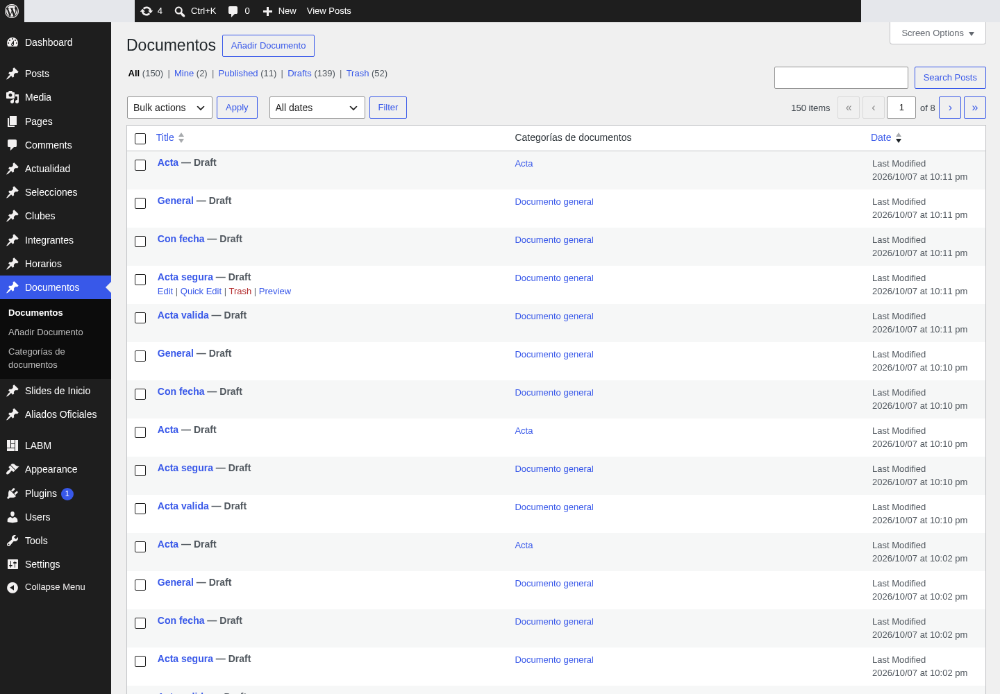
1
1En Documentos, inicia el alta con «Añadir Documento».
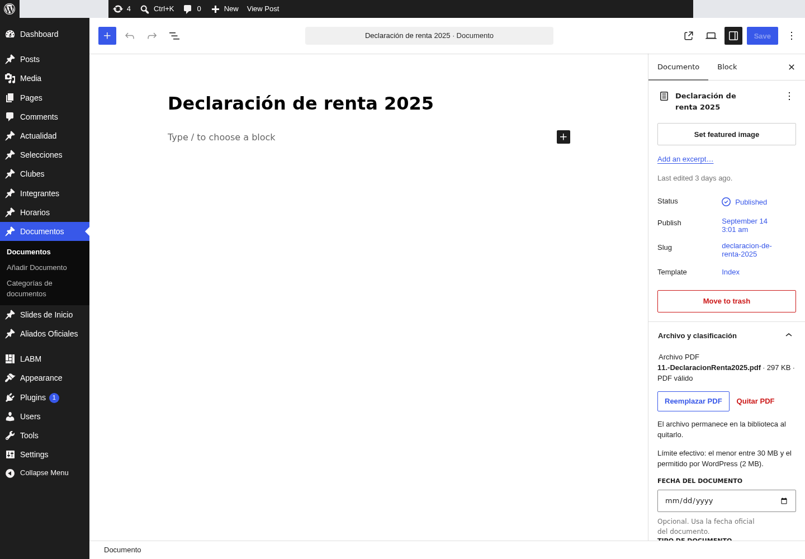
1
1El campo Título se completa después de iniciar el alta.
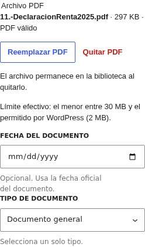
3
3Fecha y tipo opcionales, en un registro existente.
1Documentos → Añadir Documento. Escribe el título.
2En Archivo y clasificación pulsa Seleccionar o subir PDF.
3Elige el archivo y confirma Usar este PDF. Comprueba nombre, tamaño y validez.
4Completa fecha oficial si corresponde y un solo Tipo de documento.
5Revisa, publica y abre Documentos. Comprueba Ver PDF y Descargar.
Títulos y descripción: el título del PDF se cambia en Título. El encabezado del catálogo viene de la entrada en Posts / Entradas con slug banner-documentos: edita Título y Extracto (si está vacío, se usa Contenido). Sin título o texto, el encabezado se oculta. Conserva el slug.
LABM / MANUAL DE USUARIO
08
Reemplaza y comprueba un PDF
Actualizar un archivo requiere guardar la publicación y revisar el resultado en el catálogo público.
1
1Panel real de un documento existente: aquí se reemplaza el PDF asociado.
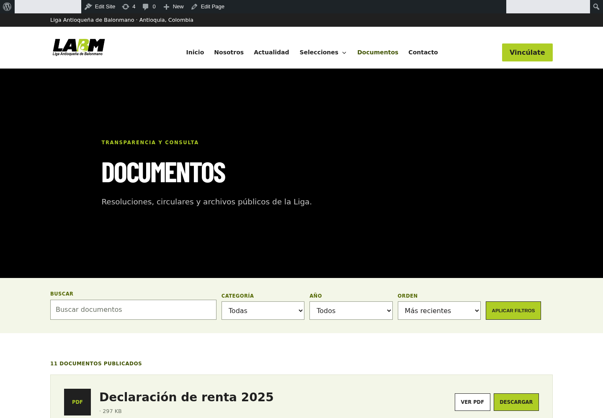
1Abre el documento existente y pulsa Reemplazar PDF. Selecciona el nuevo archivo.
2Revisa título, fecha y tipo. Guarda la publicación.
3Busca el registro público y prueba Ver PDF y Descargar.
4Para retirar el documento, pásalo a borrador o a la papelera.
Quitar PDF desvincula el archivo, pero lo conserva en Medios. Para ocultar el documento usa Borrador o Papelera; no borres primero un PDF compartido porque puede dejar enlaces rotos.
LABM / MANUAL DE USUARIO
09
Inicio: crea una diapositiva
Slides de Inicio alimenta el carrusel. Cada diapositiva se verifica en la portada, no en una página propia.
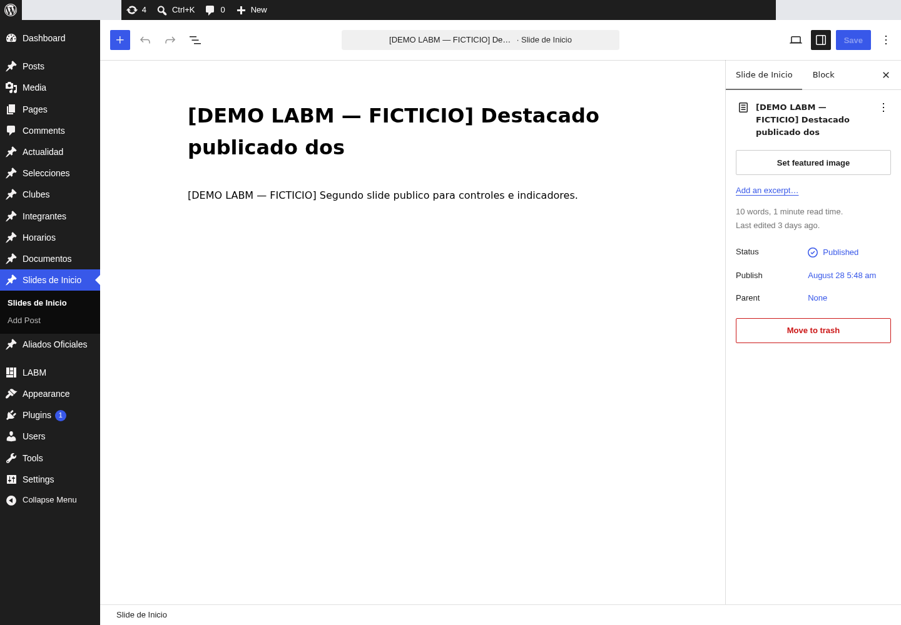
1
1Título y texto visibles en la diapositiva.
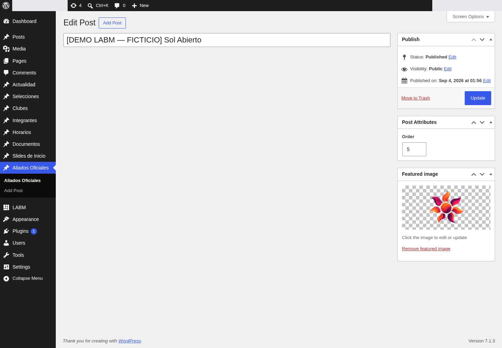
2
2Referencia del panel compartido: en Slides el control aparece en la misma ubicación.
1Slides de Inicio → Add Post / Añadir. Escribe título y texto breve.
2Asigna imagen destacada: es obligatoria para publicar. Puedes guardar sin imagen como borrador.
3Revisa el destino y la etiqueta del botón si la diapositiva lleva enlace. Publica o guarda.
4Abre Inicio, recorre el carrusel y comprueba imagen, texto y botón.
Publicación: si intentas publicar sin imagen destacada, el panel muestra un aviso y conserva el contenido como borrador. En la portada solo aparecen slides publicados con imagen válida.
Orden: en Post Attributes / Atributos → Order / Orden, o en Quick Edit / Edición rápida desde el listado, un número menor aparece antes. Si dos slides tienen el mismo número, se ordenan alfabéticamente por título. Usa números distintos para controlar la posición de forma predecible; la fecha de publicación no se utiliza.
Título y texto: edita el título de cada slide en su campo Título de WordPress. El texto breve usa primero el Extracto y, si está vacío, las primeras palabras del Contenido. No hay un texto alternativo predeterminado si ambos están vacíos. labm_destino_url y labm_cta_texto controlan el enlace; si hay destino y falta la etiqueta, el botón dice “Conocer más”. Si no ves esos campos, activa el panel de Campos personalizados (página 04A).
Imagen del slide: prepara 1920 × 1080 px (16:9), JPG/WebP, hasta 700 KB. El carrusel llena un marco ancho y puede recortar partes de la imagen según el tamaño de pantalla. Mantén rostros y elementos importantes en la zona central y deja margen arriba y abajo. No hay límite propio para Slides; aplica el límite global de Medios.
LABM / MANUAL DE USUARIO
10
Publica un aliado oficial
Su logo aparecerá en Aliados Oficiales de Inicio. Prepara el nombre aprobado y el logo oficial.
1
1Order / Orden: un número menor aparece antes.
2
2Featured image / Imagen destacada: aquí eliges el logo.
1Abre Aliados Oficiales → Add Post / Añadir. Escribe el nombre del aliado en el campo de título. No copies el prefijo de demostración.
2En Featured image / Imagen destacada, pulsa Set featured image / Establecer imagen destacada. Selecciona o sube el logo y confirma. Añade un texto alternativo como «Logo de Aliado Ejemplo».
3En Post Attributes → Order / Atributos → Orden escribe el número acordado: 10 aparece antes que 20. Con el mismo número, se ordenan por nombre.
4Revisa nombre y logo. Guarda como borrador si falta aprobación; cuando esté listo pulsa Publish / Publicar.
Prepara el logo: recomendamos PNG transparente, 1200 × 600 píxeles y hasta 200 KB. Deja margen y no estires el símbolo. Son recomendaciones: el límite real aparece en Medios.
LABM / MANUAL DE USUARIO
10A
Comprueba y modifica el aliado
La comprobación se hace en Inicio; un aliado no tiene una página pública individual.
1Abre el sitio público y entra en Inicio. Baja hasta la franja Aliados Oficiales. Revisa el logo completo, sus proporciones y el orden. Compruébalo también en un teléfono.
Para cambiar el logo, el nombre o el orden
2En el administrador abre Aliados Oficiales, busca el nombre y pulsa Edit / Editar. Pulsa la imagen actual si quieres reemplazarla.
3Haz los cambios, pulsa Update / Actualizar y vuelve a comprobar Inicio. Para retirarlo temporalmente, cambia Status / Estado a Draft / Borrador y guarda.
Si algo no sale como esperas
Problema
Qué hacer
No veo el logo.
Revisa nombre, imagen destacada y estado publicado. La franja muestra hasta 12 aliados completos según orden y nombre.
No encuentro Orden.
Busca Quick Edit / Edición rápida bajo el nombre en el listado; si no está, pide ayuda al administrador.
Quiero enlazar otra web.
No hay un enlace externo editable para cada aliado. Solicita el cambio al administrador.
El encabezado «Aliados Oficiales» es fijo. No cambies fechas para ordenar ni borres el logo anterior desde Medios: podría utilizarse en otro lugar. Para retirar y recuperar contenido, consulta la página 16.
LABM / MANUAL DE USUARIO
11
Crea un integrante
Prepara el nombre, la fotografía autorizada, el cargo y un grupo existente: Comité, Entrenadores o Representantes.
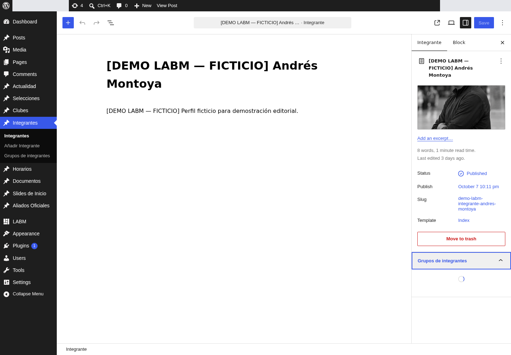
1
1Pestaña Integrante: foto y datos de la persona.
2
2Abre Grupos de integrantes para elegir el grupo existente.
Ejemplo ficticio: Ana Pérez · Entrenadora · Entrenadores.
1Entra en Integrantes → Añadir Integrante. En Título escribe el nombre completo, por ejemplo «Ana Pérez».
2En el panel derecho abre la pestaña Integrante. Selecciona la fotografía en Set featured image / Establecer imagen destacada y confirma. Añade un texto alternativo como «Retrato de Ana Pérez».
3Abre Grupos de integrantes y selecciona, para el ejemplo, Entrenadores. No crees una variante nueva. Continúa con el cargo en la página 11A antes de publicar.
Fotografía recomendada: JPG/WebP de 1200 × 1400 píxeles y hasta 350 KB. Centra el rostro y deja espacio sobre la cabeza: la tarjeta recorta la imagen. El límite de carga real aparece en Medios.
LABM / MANUAL DE USUARIO
11A
Registra el cargo y comprueba
El cargo debe guardarse en el campo exacto labm_cargo. Después debes guardar también la publicación.
1
1Name / Nombre y Add Custom Field para añadir.
2
2Value / Valor: escribe aquí el cargo de la persona.
Captura de un club para reconocer los controles. No copies su ciudad: aquí registrarás el cargo de un integrante. El ejemplo siguiente no representa un guardado real.
1Si no ves Custom Fields / Campos personalizados, actívalo según la página 04A. Baja hasta ese panel.
2Si ya existe labm_cargo, cambia Value / Valor por «Entrenadora» y pulsa Update / Actualizar junto al campo. No crees otro igual.
3Si no existe, selecciónalo en Name / Nombre. Si no está en la lista, pulsa Enter new / Introducir nuevo y escribe labm_cargo. En Value / Valor escribe «Entrenadora» y pulsa Add Custom Field / Añadir campo personalizado.
4Revisa nombre, foto, cargo y grupo. Guarda la publicación y pulsa Publicar cuando esté aprobada; confirma si se solicita.
5Abre Nosotros → Quiénes hacen posible la Liga. Revisa la tarjeta y prueba Todos y Entrenadores. Comprueba la foto en un teléfono.
Para modificar: abre el integrante, cambia sus datos, actualiza el campo del cargo y guarda también la publicación. Si no aparece: revisa los cuatro datos y el estado publicado; prueba Todos. Se consultan hasta 20 registros publicados por orden y nombre. Si persiste, pide ayuda; no dupliques la persona. Para retirarla, guarda como borrador y conserva su foto.
LABM / MANUAL DE USUARIO
12
Encuentra el texto de Nosotros
La presentación, Misión y Visión se editan en Posts / Entradas, no en Pages / Páginas → Nosotros.
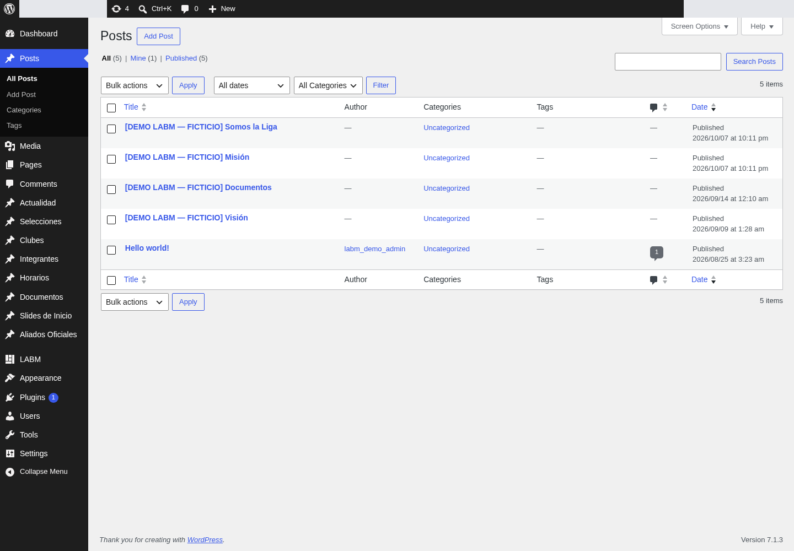
1
1Listado real: presentación, Misión y Visión; los títulos pueden cambiar.
1Entra en Posts / Entradas. Busca «Misión», «Visión» o el título de la presentación, por ejemplo «Somos la Liga». Abre la entrada candidata.
2En el panel derecho abre Post / Entrada y busca Slug / Identificador. Es el nombre interno que conecta ese texto con la página. Compruébalo sin cambiarlo.
Qué quieres editar
Identificador exacto
Presentación de Nosotros
banner-nosotros
Misión
mision-nosotros
Visión
vision-nosotros
Encabezado de Documentos
banner-documentos
Si no encuentras la entrada o el identificador, solicita ayuda. No crees un duplicado ni cambies el identificador de otra entrada. Para la presentación sigue la página 12A; para Misión y Visión, la 12B.
LABM / MANUAL DE USUARIO
12A
Cambia la presentación
Usa el texto institucional aprobado. La fotografía principal es opcional; puedes conservar la existente.
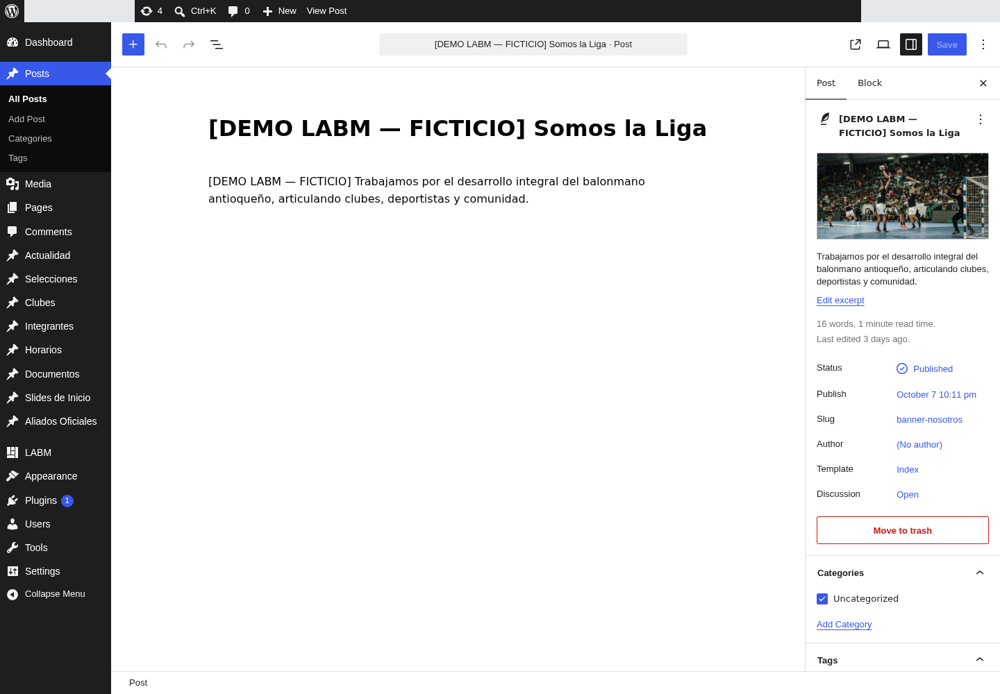
1
1Edit excerpt / Editar extracto: cambia el texto breve.
2
2Slug / Identificador: comprueba banner-nosotros sin cambiarlo.
1Abre en Posts / Entradas la entrada con identificador banner-nosotros. Cambia Título para modificar el encabezado visible.
2En la columna derecha pulsa Edit excerpt / Editar extracto o Add an excerpt / Añadir un extracto. Escribe el texto breve aprobado y revisa también el contenido del editor.
¿Por qué no cambia el texto? Si Extracto dice «Versión anterior», cambiar solo el cuerpo a «Versión nueva» no cambia Nosotros. Actualiza el extracto: tiene prioridad. Si está vacío, se muestra el contenido.
3Para reemplazar la foto, pulsa la imagen destacada y elige la nueva. Mantén el identificador y el estado publicado. Pulsa Save / Guardar o Update / Actualizar.
4Abre Nosotros en el sitio público. Comprueba el título, el texto y la fotografía en computador y teléfono.
Foto recomendada: horizontal de 1600 × 900 píxeles, JPG/WebP y hasta 500 KB. Centra el motivo principal porque el recorte cambia según la pantalla. El máximo de carga se consulta en Medios.
LABM / MANUAL DE USUARIO
12B
Actualiza Misión o Visión
Prepara el texto aprobado de la sección que vas a cambiar. No necesitas subir una imagen.
1En Posts / Entradas, abre la entrada correspondiente. Comprueba mision-nosotros para Misión o vision-nosotros para Visión, según la página 12.
2Revisa el Título. En Extracto escribe el texto aprobado. Revisa también el contenido para que no contradiga ese resumen: si hay extracto, el sitio muestra ese texto.
3Conserva el identificador y el estado publicado. Pulsa Save / Guardar o Update / Actualizar.
4Abre Nosotros y baja hasta Misión o Visión. Comprueba el texto modificado y que el otro bloque conserve su información.
Si no ves el resultado esperado
Qué ocurre
Primera comprobación
Sigue el texto anterior.
Revisa que guardaste la entrada correcta y actualizaste el Extracto. Recarga la página pública.
Desaparece el bloque.
Comprueba que la entrada esté publicada y tenga título y texto. Conserva su identificador.
No encuentro dónde editar.
Pide ayuda al administrador. Indica si es presentación, Misión o Visión y qué control no aparece.
No vacíes ni envíes estas entradas a la papelera para ocultarlas sin coordinarlo: puede desaparecer el bloque. Misión y Visión no tienen una imagen pública editable en esta versión.
LABM / MANUAL DE USUARIO
13
Contacto y pie de página
LABM abre Footer LABM. Esta pantalla gestiona los datos compartidos del pie de página.
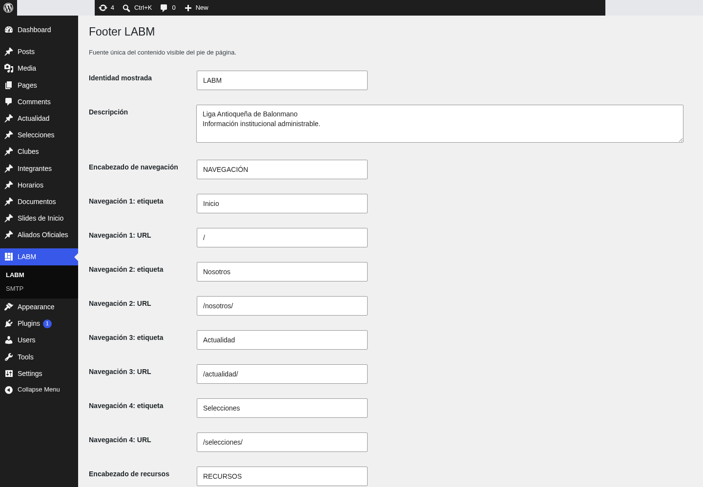
1Abre LABM. En Footer LABM edita la identidad, la descripción y los encabezados/etiquetas de navegación, recursos y contacto, además de sus URLs.
2Actualiza Correo, Teléfono y Dirección. Los valores iniciales son 3233212981 y Carrera 70 N.48-273 Int. 106 Coliseo Yesid Santos, Medellín, Colombia. También puedes cambiar las etiquetas y URLs de Facebook e Instagram, y la política de datos.
3Baja al final y pulsa Save Changes / Guardar cambios. Revisa el footer y Contacto.
Correo, Teléfono, Dirección y redes se comparten con Contacto. El mapa de Google Maps se genera desde la Dirección guardada. Si borras Teléfono o Dirección, Contacto omite ese dato; si la Dirección está vacía, también omite el enlace al mapa. Si aún no hay configuración guardada, Footer LABM usa sus valores iniciales. LABM → SMTP gestiona el envío; Contacto no tiene una bandeja de mensajes.
Imágenes: Contacto y Footer LABM no ofrecen un campo para subir fotografías. El nombre de marca del pie se presenta como texto. El mapa y los iconos sociales son elementos del tema, no imágenes que se carguen en esta pantalla.
LABM / MANUAL DE USUARIO
14
Imágenes, logos y galerías
Medios conserva los archivos reutilizables. La imagen destacada y la galería del cuerpo son cosas diferentes.
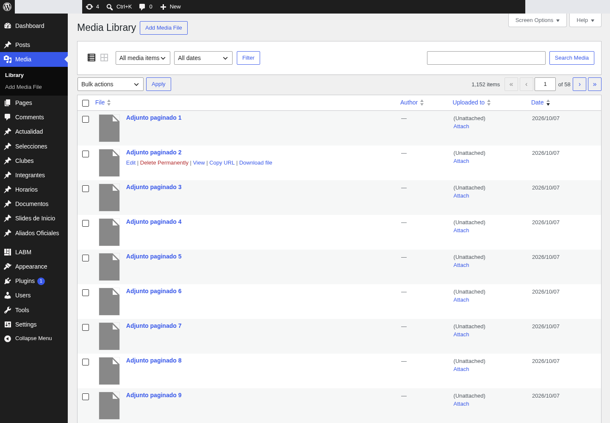
1Media / Medios: busca un archivo existente antes de subir un duplicado.
2Selecciona o carga la imagen. La persona que publica debe escribir un texto alternativo breve que describa lo visible, no repetir solo el nombre del archivo.
3En la publicación usa Imagen destacada para su imagen principal. Para varias fotos, inserta un bloque Galería.
4Ordena las imágenes y revisa pies de foto antes de publicar.
No borres un archivo compartido sin comprobar dónde se utiliza. Eliminarlo desde Medios puede romper otras publicaciones.
Límite técnico de imágenes: el tema y el plugin no añaden un máximo de peso ni de dimensiones por sección. La carga depende del límite global de WordPress y PHP. En el entorno de las capturas se documentó un máximo efectivo de 2 MB por archivo (límite de carga del servidor); en el servidor publicado puede ser distinto y debe confirmarse en la biblioteca o con el administrador del hosting. Las cifras por sección de esta cartilla son recomendaciones, no bloqueos del sistema. Para buena velocidad: JPG/WebP para fotografías y PNG transparente para logos; optimiza los archivos antes de subirlos. SVG solo cuando esté habilitado por el administrador. En todos los casos usa texto alternativo descriptivo y evita capturas con texto pequeño o ilegible.
LABM / MANUAL DE USUARIO
15
Publica un club asociado
Prepara nombre oficial, descripción, resumen breve y logo. Clubes es una sección distinta de Aliados Oficiales.
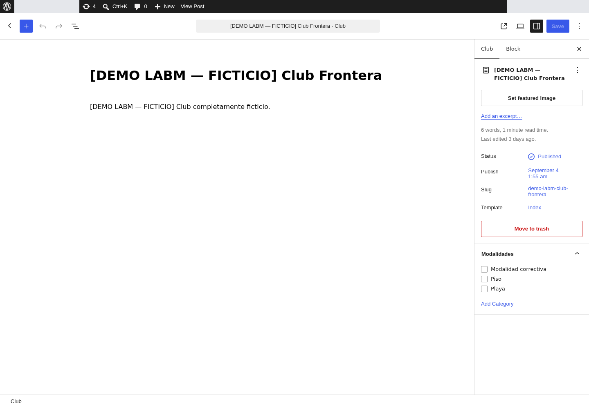
1
1Imagen destacada para el logo y Extracto para el resumen.
2
2Modalidades: selecciona Piso o Playa según corresponda.
1Abre Clubes → Añadir Club. Escribe el nombre en Título y la descripción en el cuerpo de la publicación.
2En la pestaña Club del panel derecho, pulsa Set featured image / Establecer imagen destacada. Selecciona o sube el logo y confirma; añade un texto alternativo con el nombre del club.
3Pulsa Add an excerpt / Añadir un extracto. Escribe una o dos frases para la tarjeta de Inicio. Si lo dejas vacío, el sitio genera un resumen desde la descripción.
Resumen ficticio: «Club Ejemplo promueve el balonmano de piso para jóvenes del municipio».
4En Modalidades marca la opción existente que corresponda. Revisa el borrador y pulsa Publish / Publicar cuando esté aprobado; confirma si se solicita.
Logo recomendado: PNG transparente de 1000 × 1000 píxeles y hasta 200 KB. Deja margen: el logo se muestra completo, sin estirarse. No es un límite obligatorio; consulta el máximo real en Medios.
LABM / MANUAL DE USUARIO
15A
Comprueba y modifica el club
Inicio muestra únicamente clubes publicados y admite hasta ocho elementos. Publicar un club no garantiza su presencia inmediata en la portada.
1Abre Inicio → Clubes asociados. Si aparece tu club, revisa nombre, logo y resumen. Pulsa su nombre o logo para abrir la página individual.
2Si no está entre los ocho, abre Clubes en el administrador y usa View / Ver desde el listado o el editor para comprobar su página publicada.
3Para modificarlo, busca el nombre en Clubes y pulsa Edit / Editar. Cambia los datos y revisa también Extracto si corriges la descripción: ese resumen tiene prioridad en Inicio.
4Pulsa Save / Guardar o Update / Actualizar. Revisa Inicio y la página del club, también en un teléfono.
Si no aparece o falta información
Comprueba el estado publicado. La portada muestra solo clubes publicados y, como máximo, ocho. Si hay más, elige los primeros por Orden de menor a mayor y luego por nombre. Si necesitas cambiar el orden y no encuentras el control, pide ayuda. No alteres fechas ni dupliques el club.
Para retirarlo: cambia a Draft / Borrador, guarda y comprueba la página pública. No borres el logo desde Medios. Consulta la página 16 para retirar y recuperar. El encabezado «Clubes asociados» se cambia con apoyo del administrador.
LABM / MANUAL DE USUARIO
16
Retira y recupera contenido
Usa borrador o papelera para retirar contenido sin perderlo definitivamente.
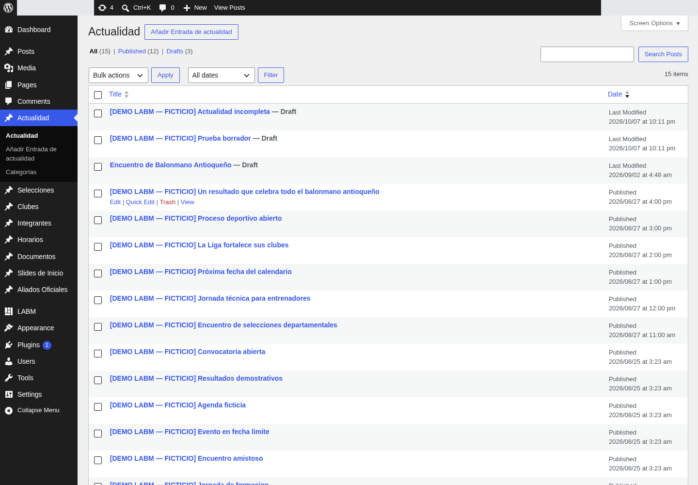
1Para retirar una publicación conservándola, abre el editor, cambia Status / Estado a Draft / Borrador y guarda.
2Si necesitas moverla a la papelera, usa Trash / Papelera en su sección.
3Para recuperarla, abre Trash, localiza el registro y pulsa Restore / Restaurar.
4Revisa todos los datos y el estado antes de volver a publicar.
La Papelera es propia de cada colección: entra en la sección del contenido y abre su vista de papelera. Borrar permanentemente es distinto de retirar. Conserva los campos, imágenes y PDF asociados mientras el registro pueda recuperarse.
LABM / MANUAL DE USUARIO
17
Tu revisión antes de publicar
Usa esta lista para entregar contenido claro, completo y fácil de consultar.
CONTENIDO
Título y texto revisados. Sin datos de demostración usados como información oficial. Fechas, nombres y enlaces correctos.
IMÁGENES Y ARCHIVOS
Imagen destacada o logo adecuados. Texto alternativo y autorización de uso. PDF válido, con título y clasificación.
CLASIFICACIÓN
Modalidad Piso/Playa correcta. Grupo del integrante y cargo completos. Extracto coherente con el contenido. Campos personalizados visibles, con clave exacta y valor actualizado.
RESULTADO PÚBLICO
Vista previa revisada en móvil. Sección pública comprobada; detalle cuando exista. Ver PDF / Descargar funcionan. En la interna se resaltan el padre Selecciones y el enlace Piso o Playa correspondiente.
Si no ves una sección o un campo, consulta los permisos y la configuración con el administrador. No cambies plantillas o plugins para resolver una publicación.
Liga Antioqueña de Balonmano
Cartilla de usuario
Guía visual breve para crear, revisar y publicar contenido en WordPress.
Versión 1.5 · 19 de octubre de 2026 Las imágenes de esta cartilla siguen la estructura nativa del panel Custom Fields. El idioma, los permisos y la posición de algunos controles pueden variar.
1 · Acceso y navegación
Encuentra la sección correcta
Entra a /wp-admin/ con tu cuenta y usa el menú lateral. El panel de administración y el sitio público cumplen funciones distintas.
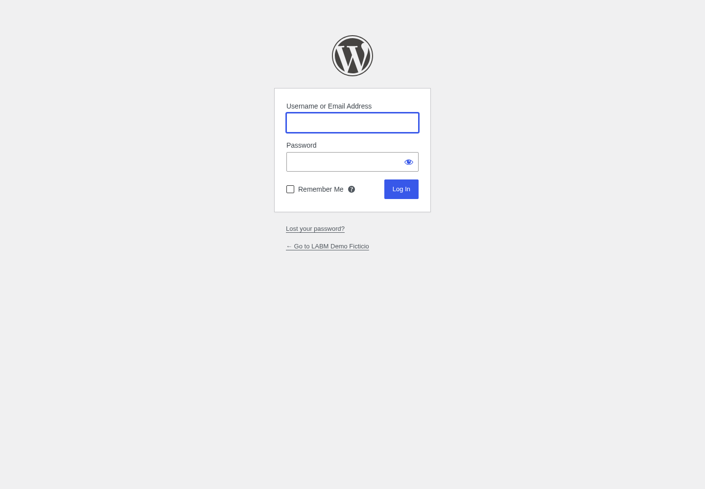
Acceso al administrador.
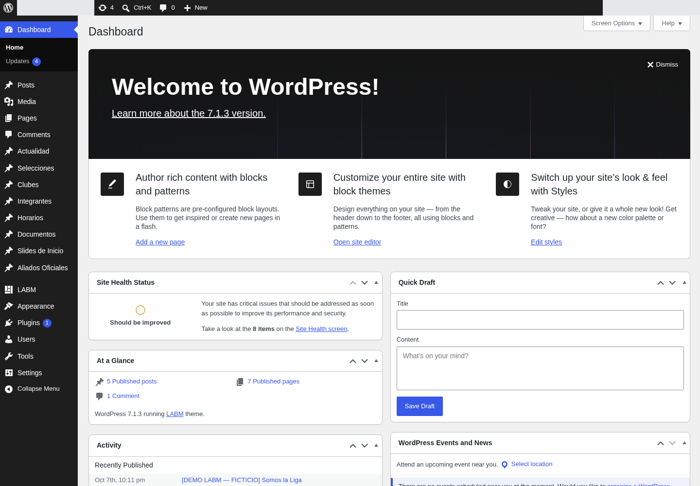
Menús disponibles según el rol.
Contenido
Menú
Resultado
Noticias y eventos
Actualidad
Actualidad y selecciones automáticas de Inicio.
Participaciones
Selecciones
Listados de Piso o Playa.
PDF públicos
Documentos
Catálogo de documentos.
Slides, aliados y clubes
Inicio
Carrusel, franja de aliados y clubes.
Personas
Integrantes
Equipo de Nosotros.
Importante: los textos institucionales de Nosotros se alimentan de Entradas con identificadores concretos. No asumas que editar una página estructural cambia esos bloques.
2 · Campos personalizados
Activa los campos una sola vez
Algunas secciones guardan datos adicionales mediante campos personalizados. Cada usuario editor debe activar el panel en sus preferencias.
1Abre una publicación nueva o existente en el editor de bloques.
2Pulsa ⋮ en la esquina superior derecha y entra en Preferences / Preferencias.
4Si WordPress lo solicita, recarga. Luego baja al panel, pulsa Add New / Añadir nuevo y escribe la clave exacta.
La captura corresponde al panel real después de activarlo. La preferencia queda guardada por usuario, no por publicación.
No traduzcas ni cambies las claves:labm_... debe conservarse exactamente. El valor sí debe ser el dato editorial que corresponda.
3 · Publicaciones
Crear, revisar y publicar
Abre la sección correcta y pulsa Añadir.
Escribe un título claro y el contenido completo.
Completa imagen destacada, extracto, categorías o clasificaciones.
Guarda como borrador mientras revisas.
Usa Vista previa y comprueba también el móvil.
Publica sólo cuando el estado y los datos sean correctos.
Abre el resultado público y verifica enlaces, imágenes y texto.
Guardar no siempre significa publicar. Revisa Status / Estado. Un borrador o una publicación privada no aparece en los listados públicos.
Datos de Actualidad
En el evento destacado de Inicio, labm_fecha_evento también indica la fecha del evento. El resumen usa el Extracto; si está vacío, se genera con el Contenido.
4 · Selecciones
Piso y Playa
Asigna la modalidad correcta en Modalidades. Selecciona Piso o Playa; no la sustituyas por texto libre. El título de cada participación se edita en el campo Título de WordPress.
Para cambiar el título y descripción del listado, edita el término correspondiente en Selecciones → Modalidades (labm_modalidad): el campo Nombre define Piso/Playa y Description / Descripción cambia el texto bajo la cabecera. Cuando Description está vacía aparece “Conoce las selecciones publicadas de la Liga Antioqueña de Balonmano.” El prefijo “SELECCIÓN ANTIOQUIA ·” es fijo y no editable. El filtro está en el submenú de navegación Selecciones. El título “Balonmano de Piso/Playa” y el conteo son automáticos.
labm_modalidad_detalle permite explicar brevemente la tarjeta; si queda vacío no aparece ese dato. No determina el listado: para eso usa la clasificación Modalidades.
Comprueba el listado público de Piso o Playa y abre la interna: deben mantenerse activos el padre Selecciones y la modalidad correspondiente.
5 · Documentos
Publica y sustituye un PDF
El título de un documento se edita en el campo Título de su publicación. El encabezado y la descripción del catálogo vienen de la entrada institucional con slug banner-documentos: se modifica en Posts / Entradas, usando Título y Extracto (o Contenido si Extracto está vacío). Sin título o texto, el encabezado se oculta.
Entra en Documentos → Añadir Documento.
Escribe el título.
Abre Archivo y clasificación.
Selecciona o sube el PDF y comprueba nombre, tamaño y estado.
Completa fecha y tipo si corresponde.
Publica y verifica Ver PDF y Descargar.
Controles reales del panel Archivo y clasificación en un documento existente.
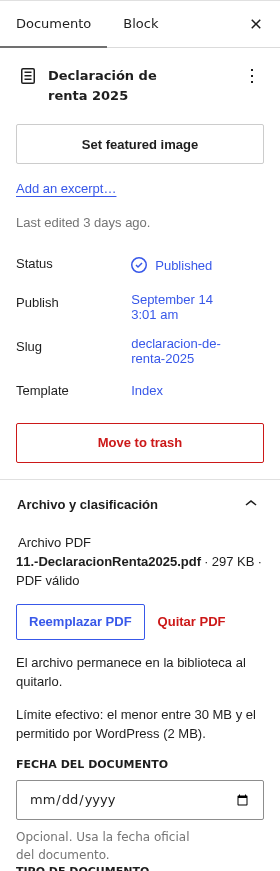
Fecha y tipo, si corresponden.
Para reemplazar un archivo usa Reemplazar PDF. Quitar PDF sólo desvincula el archivo; no lo borra de Medios.
6 · Inicio
Slides, aliados y clubes
Slides
El título y la imagen destacada son obligatorios. El título se cambia en el campo Título; el resumen usa Extracto o, si está vacío, Contenido. Si ambos están vacíos, no hay texto de reemplazo. Si hay botón, labm_destino_url indica el destino y labm_cta_texto su etiqueta visible; si falta la etiqueta, aparece “Conocer más”.
Aliados
El campo Título identifica el aliado y el logo es su imagen destacada. La franja no muestra una descripción ni tiene enlace externo editable. El encabezado “Aliados Oficiales” es fijo. Define el orden si tu rol lo permite.
Clubes
El nombre del club se cambia en Título. La tarjeta muestra el Extracto o genera un resumen del Contenido cuando el extracto está vacío. “Clubes asociados” es un encabezado fijo. La portada muestra únicamente clubes publicados, hasta un máximo de ocho, por Orden y luego por nombre.
7 · Nosotros
Integrantes y textos institucionales
El nombre de cada integrante se edita en el campo Título de su publicación; labm_cargo indica su función y aparece en la tarjeta pública.
Los grupos válidos para los filtros son comite, entrenadores y representantes. Un integrante incompleto no se muestra en Nosotros.
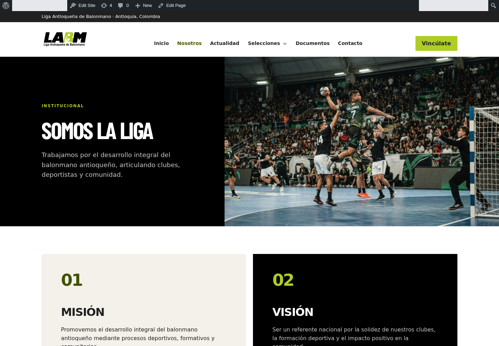
Textos
Banner, Misión, Visión y el encabezado de Documentos se alimentan de Entradas identificadas por sus slugs. Edita Título y Extracto; cuando Extracto está vacío, se usa Contenido. Sin título o texto, el bloque no aparece. Conserva los identificadores. El encabezado general de Integrantes y los nombres de filtro se generan con etiquetas fijas.
8 · Medios y Contacto
Archivos, imágenes y pie
Busca archivos antes de duplicarlos.
Footer LABM y enlaces compartidos.
Usa texto alternativo descriptivo en imágenes importantes.
La imagen destacada no es lo mismo que una galería del contenido.
No borres un archivo de Medios sin comprobar dónde se utiliza.
El correo visible y la configuración SMTP son datos distintos.
No pulses Enviar prueba durante una revisión: esa acción envía correo.
Los cambios de usuarios, SMTP, plugins, plantillas y estructura requieren apoyo del administrador o del equipo técnico.
9 · Revisión final
Antes de publicar
La publicación pertenece a la sección correcta.
Título, texto, extracto e imagen están revisados.
La modalidad, categoría o grupo es correcto.
Los campos personalizados usan la clave exacta.
Los archivos tienen autorización de uso y texto alternativo cuando corresponde.
Se revisó la vista previa, el móvil y la página pública.
El estado final es el acordado: borrador, revisión o publicado.
Si algo no aparece
Problema
Primera comprobación
No aparece un dato adicional
Activa Campos personalizados en Preferencias → Paneles.
Un integrante no aparece
Nombre, cargo, foto destacada, grupo y estado publicado.
Un PDF no se guarda
Formato PDF válido, acceso, tamaño y estado del archivo.
El sitio muestra contenido anterior
Confirma que actualizaste la publicación correcta y recarga.
Recuerda: no compartas contraseñas ni incluyas usuarios en paquetes de contenido.